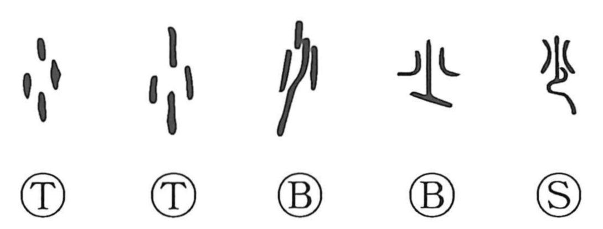

少

Kun: sukunai, sukoshi | On: shou
few ・ a little ・ young
Explanation
Shirakawa reads 少 as a pictograph: small shells threaded onto a cord. The earlier graph 小 shows the shells scattered, while 少 depicts them gathered on a string; the line for the cord is not an independent character but part of the picture. Because only a small number of shells are strung, the character comes to mean “few” and “a little,” and by extension, when applied to people, “young.”